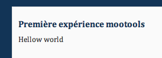
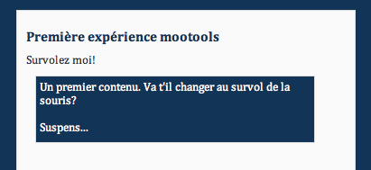
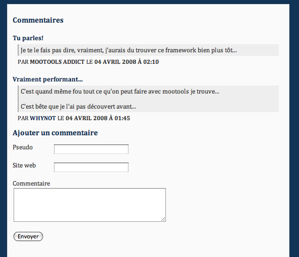

Rien de plus lourd que développer en Javascript. Pourquoi ? Quatre cinq navigateurs sur lesquels vérifier nos scripts, c'est-à-dire quatre à cinq débuggers à maîtriser et aussi vingt-cinq fois plus de temps perdu à s'arracher les cheveux.
Plus fort que les implants capillaires, les framework javascript font dans la prévention. En effet, en plus de permettre une compatibilité accrue entre les différents navigateurs pour vos scripts, ils permettent également de faciliter le développement de vos fonctionnalités Javascript sur vos sites.
Transformant des centaines de lignes de codes en quelques caractères, les class écrites par les gourous de la langue de Brendan Eich vous permettront d'enfin développer intuitivement vos codes javascript et ne plus perdre de temps à créer des fonctions ou effets plutôt que votre résultat final.
Pour lire ce tutoriel, vous devez avoir les connaissances de bases en programmation, comprendre les principes de la programmation orientée objet et avoir les connaissances requises en xHtml / CSS (autrement dit : savoir créer des sites web).
Nous voici entrés dans le vif du sujet : mootools. Je vous donnerai dans cette section les liens importants et vous expliquerai comment créer une page incluant le framework mootools. Si vous êtes pressés, je vous conseille de passer directement à la seconde sous-partie et de garder celle-ci en dessert.
La documentation
Comme tout framework, mootools propose une documentation, hélas en anglais. Mais si vous voulez un jour percer dans le domaine de la programmation, il faudra finir par maîtriser les dix mots de vocabulaire en anglais qui sont toujours utilisés dans les documentations de langages. Bref, plus que de perdre du temps à chercher la documentation en français, je vous conseille vivement de mettre en favoris un dictionnaire en ligne, dites-vous bien que ce temps ne sera jamais perdu.
Téléchargement
Important : pour utiliser le framework, vous devrez d'abord le télécharger dans la partie adéquate. Dans un premier temps, je vous conseille de cocher toutes les cases des class que vous voulez télécharger, ceci afin d'éviter que certains codes ne fonctionnent pas. Quand vous aurez atteint le stade de padawan-master, vous pourrez ne télécharger que les parties qui seront nécessaires à votre code.
Démonstrations
Vous pouvez également trouver des démonstrations sur le site. On regrettera que celles-ci ne soient pas commentées, mais après la lecture de ce tutoriel, vous devriez être à même de les comprendre.
Le forum
Enfin, last but not least, le google groups où vous pourrez poser des questions, en anglais s'il vous plaît. Attention toutefois, je vous conseille de faire avant une recherche sur le forum et sur Google pour votre problème, sans quoi vous risqueriez de ne pas être spécialement bien accueillis...
Bref, fini le blabla, place à l'action et commençons à utiliser mootools...
Allons-y pour commencer un traditionnel Hello World. Tout d'abord, parce que je suis un peu fou et que vous ne lisez pas un tuto comme les autres, on ne va pas faire un Hello World mais un Hellow World (oui, je sais, le titre est trompeur).
Téléchargement
Direction donc la page de téléchargement de mootools pour télécharger la dernière version de mootools. Dans un premier temps, cochez toutes les cases afin d'avoir le framework le plus complet possible (c'est sûr, on n'utilisera pas tout, mais comme ça vous êtes prêts si vous installez d'autres plugins).
Nous voici donc dans le vif du sujet : appuyez sur download et enregistrez le fichier dans un dossier qui nous permettra de faire nos premiers pas en mootools (que ceux qui n'ont pas d'inspiration prennent mootools/). Pour plus de facilité, appelez votre fichier mootools.js. Ensuite, créez un fichier *.html (index.html par exemple) dans ce même répertoire, un fichier script.js qui servira à écrire nos scripts, un fichier style.css que vous pouvez copier-coller ci-dessous et passons à l'action.
Code HTML et CSS
Étant donné que ce n'est pas vraiment le but du tutoriel, je donnerai la base du code xHtml que j'emploierai et le fichier CSS sans explication.
Remarquez aussi que le fichier script.js doit être positionné après le fichier mootools.js, puisqu'il utilise le framework.
Maintenant que tout ça est lancé, je vous propose de commencer notre Hellow World.
Le Hellow World
Où placer le code ?
Il faut savoir tout d'abord que le code Javascript, quand il doit traiter des éléments, ne peut traiter que des éléments (comprenez par éléments les balises img, p, a, span, ...) qui ont déjà été lus par le navigateur (Internet Explorer, Firefox, Safari, ...). Étant donné que notre fichier JavaScript est déclaré dans le début du code, on ne pourrait théoriquement interagir avec aucun élément. La solution serait donc de placer l'appel à notre fichier script.js à la fin de la page (comme ça, on est sûrs que tous les éléments ont été lus). Heureusement, mootools a prévu une parade et a repris l'évènement domready. L'évènement domready s'utilise comme suit :
window.addEvent('domready', function(){
// C'est ici qu'on peut mettre notre code
alert('Toutes les balises ont été chargées');
// Fin du code
});
Dans un premier temps, je dirais que vous devez retenir qu'il faut placer votre code dans cet espace, pour les plus futés (c'est-à-dire vous), vous devriez normalement comprendre ce code à la fin du tutoriel. Si vous placez ce code dans votre page script.js, vous verrez le message "Toutes les balises ont été chargées" affiché dans une boîte de dialogue lorsque la page aura été chargée.
Le code en question
Allons-y maintenant pour notre Hellow World. On pourrait faire un message d'alerte comme précédemment, mais alors mootools n'aurait aucune utilité. Voilà alors le défi pour notre Hellow World.
Créer un div avec une id "hellow", sans contenu
Y afficher le texte Hellow World grâce au Javascript
Allons-y donc pour le code xHtml, à mettre à l'endroit convenu.
Rafraîchissez la page, et miracle, le message s'affiche (sinon, balancez votre PC par la fenêtre et rachetez-en un autre).

Comprendre le code
Analysons le code Javascript.
$('hellow')
Ce code veut dire que l'on veut aller chercher l'élément dont l'id est hellow. En fait, il s'agit d'un raccourci pour la fonction document.getElementById('hello'), qui, il faut l'avouer est quand même bien plus court.
set('text','Hellow world')
On applique la méthode set() à l'élément que l'on a été rechercher précédemment. Cette méthode attend pour premier argument la propriété à changer et en deuxième argument la valeur de cette propriété. Par exemple, on peut aussi utiliser
element.set('class','maClass');
Pour la méthode set('text', 'Le texte'), le texte passé en deuxième argument sera mis entre la balise ouvrante et la balise fermante de l'objet (ici un élément) auquel la méthode a été appliquée.
Voilà donc notre premier script effectué, j'espère que vous suivez toujours, restez avec moi, ça va s'intensifier... Je vous propose en deuxième partie de créer des interactions...
Si on ajoute du Javascript, c'est évidemment pour créer de l'interaction avec l'utilisateur. Pas question donc de se contenter de modifier le contenu de quelques balises au chargement... laissons place à l'interactivité.
Le but
Voici donc le but du prochain script que nous allons réaliser...
Créer un texte interactif
Au survol de ce texte, le contenu d'un div changera
Code xHtml
Je vous propose donc comme code xHtml, un premier span qui sera interactif, et un div qui contiendra le texte qui changera au survol. J'ai mis comme class pour tous les deux interactif, afin d'avoir un exemple un peu plus beau.
<span class="interactif" id="action">Survolez-moi !</span>
<div class="interactif" id="reaction">
Un premier contenu. Va-t-il changer au survol de la souris ?<br /><br />Suspens...
</div>

Le Javascript
Attaquons-nous maintenant au code Javascript. Pour la première fois, on va décomposer le code en plusieurs étapes, qui - on s'en rendra compte plus tard - ne sont pas toujours utiles.
On cherche l'élément
var action = $('action');
Ici, on stocke dans la variable l'objet que va renvoyer $('action'), qui n'est autre que l'élément qui a l'id action, ici l'élément qui nous intéresse. (Oui, je sais, il y a parfois de ces coïncidences...)
Ajouter un comportement
Pour ajouter un comportement à un événement, mootools utilise une méthode qui s'appelle addEvent. addEvent demande en arguments : premièrement, l'événement correspondant (vous pouvez trouver de nombreuses listes des événements sur Google) sans le on, et écrit en minuscules ; deuxièmement, la fonction qui doit être exécutée.
Ici, nous voulons que le code s'effectue lorsque la souris survole le texte, on choisira donc l'eventonMouseOver, le code en résultant :
action.addEvent('mouseover',function() {});
On notera l'écriture un peu spéciale de la fonction en argument... Je prône l'apprentissage par l'exemple : regardez un peu comment on fait, et vous vous rendrez compte par après des différentes façons de passer en argument une fonction.
Que faire lors de l'événement ?
Nous avons donc maintenant ajouté l'évènement. Nous devons renseigner le navigateur sur ce qu'il doit faire quand on survole l'élément. Ici, changer le texte. On se retrouve donc avec un code analogue au script précédent. Le code final est :
var action = $('action');
action.addEvent('mouseover',function() {
$('reaction').set('text', 'La souris le survol!');
});
Rafraîchissez votre page dans votre navigateur et survolez le texte... Ça fonctionne !! Génial, n'est-ce pas ?
Plus grand, plus beau, dans le même registre, on va ajouter un évènement quand on quittera le texte... Je vous donne le code, vous devriez être à même de le comprendre...
action.addEvent('mouseout',function() {
$('reaction').set('text', 'La souris est partie!');
});
Voilà donc, vous savez maintenant effectuer des fonctions à un événement précis...
Je vous propose dans la section suivante de modifier le comportement d'un lien, et d'aborder la création de nouveaux éléments.
Il est parfois intéressant en Javascript de pouvoir créer des éléments dans un document. En fait, pour être plus exact, une fois qu'on s'est rendu compte que c'est si facile, ça devient indispensable...
Le but
Je vous propose donc de découvrir la création, ô combien facile, d'éléments dans mootools. Au menu de cette section :
création d'un nouveau commentaire dans une liste de commentaires ;
les texte et pseudo proviendront d'un formulaire.
Voilà donc, le défi est lancé !!
Le code xHtml
Pour cela, je vous propose comme d'habitude un code xHtml. J'ai déjà mis quelques commentaires de sorte que celui qu'on ajoutera via le formulaire ne se sente pas trop seul.
Pour ce qui est des commentaires, les balises dl me semblent tout à fait adaptées, une class commentaire a été définie dans le fichier CSS spécialement pour l'occasion. Le tout englobé par un div avec pour id commentaires, pour pouvoir manipuler tout ça par après...
On ajoute également un formulaire à la fin pour pouvoir poster le commentaire.
<h1>Commentaires</h1>
<div id="commentaires">
<dl class="commentaire">
<dt>Tu parles !</dt>
<dd class="texte">
Je te le fais pas dire, vraiment j'aurais du trouver ce framework bien plus tôt...
</dd>
<dd class="details">Par <span class="auteur">Mootools addict</span> le <span class="date">04 avril 2008 à 2:10</span></dd>
</dl>
<dl class="commentaire">
<dt>Vraiment performant...</dt>
<dd class="texte">
C'est quand même fou tout ce qu'on peut faire avec mootools je trouve...
C'est bête que je l'aie pas découvert avant...
</dd>
<dd class="details">Par <span class="auteur">WhyNot</span> le <span class="date">04 avril 2008 à 1:45</span></dd>
</dl>
</div>
<h2>Ajouter un commentaire</h2>
<div id="ajouter_commentaire">
<form id="formulaire" method="post" action="ajouter_commentaire.php">
<p><label for="titre">Titre</label><input type="text" name="titre" id="titre" /></p>
<p><label for="pseudo">Pseudo</label><input type="text" name="pseudo" id="pseudo" /></p>
<p><label for="web">Site web</label><input type="text" name="web" id="web" /></p>
<p><label for="commentaire">Commentaire</label><br /><textarea name="commentaire" id="commentaire" cols="40" rows="5"></textarea></p>
<p><input type="submit" value="Envoyer" id="submit"/></input></p>
</form>
</div>
Nous voici donc avec notre page web :

Le code Javascript
On va donc maintenant passer aux choses sérieuses, à savoir le Javascript... Notre but est que, à l'ajout du message, on ajoute le message sur la page et non qu'on soit redirigé vers une autre page.
Ajout de l'événement
On ajoute donc un évènement onSubmit au formulaire.
À propos de ce code, les deux lignes ajoutées permettent de supprimer le comportement normal de l'élément. Autrement dit, une fois "soumis", le formulaire ne redirigera pas vers la page qui correspond à l'attribut action du code xHtml.
Récupération de données
On va donc commencer par récupérer la valeur des éléments.
var titre = $('titre').value;
var pseudo = $('pseudo').value;
var web = $('web').value;
var commentaire = $('commentaire').value;
Jusque-là, je crois que le code est assez intuitif. On stocke dans une variable la valeur de l'élément correspondant.
Comment créer un nouvel élément ?
Créons maintenant le premier élément. Pour créer un nouvel élément, il faut instancier (créer) un nouvel objet de type Element. Pour rappel, on instancie un objet en écrivant :
var maVariable = new Constructeur();
Le constructeur de l'élément demande en argument en premier lieu le nom du tag et en second argument optionnel les attributs de la balise. Vous pouvez voir des exemples dans la documentation.
Code final commenté
Je vais vous donner le code dans son ensemble, avec des commentaires.
window.addEvent('domready',function() {
$('formulaire').addEvent('submit',function(event) {
event.stop();
var titre = $('titre').value;
var pseudo = $('pseudo').value;
var web = $('web').value;
var commentaire = $('commentaire').value;
// Créations des éléments
var nouveauCommentaire = new Element('dl', {
'class':'commentaire'
});
var elTitre = new Element('dt');
var elCommentaire = new Element('dd', {
'class':'texte'
});
var elDetails = new Element('dd', {
'class':'details'
});
var elAuteur = new Element('span', {
'class':'auteur'
});
if (web != '') {
var lien = new Element('a', {
'href': web,
'alt': 'Site de l\'auteur'
});
elAuteur.inject(lien);
}
// On initialise le texte de chaque élément
elTitre.set('text', titre);
elCommentaire.set('text', commentaire);
elAuteur.set('text', pseudo);
// La fonction inject permet d'ajouter à l'élément passé en argument l'objet auquel on applique la méthode
elTitre.inject(nouveauCommentaire); // => L'élément elTitre va être injecté dans nouveauCommentaire
elCommentaire.inject(nouveauCommentaire);
elDetails.inject(nouveauCommentaire);
elDetails.appendText('Par '); // La méthode appendText() ajoute du texte à l'élément
elAuteur.inject(elDetails);
elDetails.appendText(' aujourd\'hui');
nouveauCommentaire.inject($('commentaires'),'top');
// La méthode empty() vide l'élément de tout son contenu
$('ajouter_commentaire').empty().set('text','Merci de votre participation !');
});
});
Nous voici donc avec notre mission accomplie...
Voilà, grâce à ce petit tutoriel, vous avez fait vos premiers pas avec mootools. J'espère qu'il a été instructif et que vous avez bien aimé comment cela était présenté.
Ceci n'est qu'un avant-goût de la programmation mootoolsienne. Je vous conseille de faire un tour dans la documentation officielle et de regarder les différents scripts proposés en demo. Avec des connaissances de base en programmation, il devrait être assez facile de comprendre les codes.
J'écrirai peut-être un autre tutoriel, dépendant du succès de celui-ci...
P.-S. : voilà, comme ça j'aurai au moins mis un smiley dans le tutoriel ;) .
Je voudrais remercier ptipilou pour la zCorrection effectuée sur ce tuto. Je trouve que le travail des zCorrecteurs est un travail de titans, et ce qu'ils font est remarquable. Ayez une pensée pour eux en lisant ce tuto, car vous arrêteriez peut-être de le lire après la 10e faute (fin du 2ème paragraphe) en voyant tous les écarts à la grammaire française que nous faisons (c'est ce qui arrive quand on est trop concentré sur le code...) .